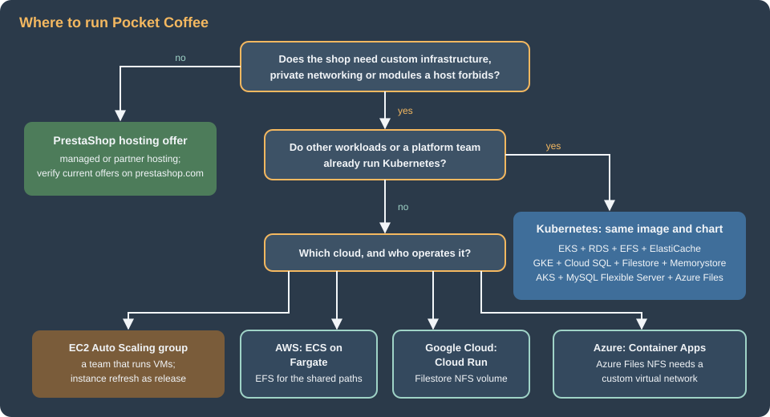

Cloud: Google Cloud, Azure and Alternatives
|
This content was generated with the assistance of AI and should be verified against the official documentation before being relied on in production. |
This page was written against PrestaShop 9.2.0 (2026-09-30) on PHP 8.5, Kubernetes 1.36 and 1.37, MySQL 8.4 on Cloud SQL and on
Azure Database for MySQL Flexible Server, Memorystore for Valkey 9.x and Azure Managed Redis, and was checked on 2026-10-29. It
names no prices: sizes are starting points to measure on your own traffic. The Kubernetes manifests were validated against the
Kubernetes 1.36 schemas with kubeconform (custom resources were checked for syntax only), the shell with shellcheck and
the JSON and YAML with a parser. No cloud account was used: the gcloud, az and aws commands are composed from the Google
Cloud, Azure and AWS pages of this site and from the vendors' documentation and have not been run, so verify each flag with
--help on the CLI version you install. The statements about PrestaShop’s own behaviour come from reading the 9.2.0 source and
were not reproduced on every cloud, so each one says what to test.
The other pages of this section build one architecture on AWS: Pocket Coffee on EKS in eu-west-1, with the database in RDS,
the shared files on EFS, the SQL cache and sessions in ElastiCache and the secrets in Secrets Manager (start with
Cloud: Reference Architecture and
Cloud: EKS Infrastructure and Helm Deployment). Nothing in
that design belongs to AWS except the services that fill each tier. This page maps the tiers to Google Cloud and Azure, shows
the commands and manifests that differ, and then compares the options that do not use Kubernetes. The shared fundamentals are on the cloud pages of this site and are linked where they apply:
GKE Clusters, Cloud SQL,
AKS Clusters and PostgreSQL and MySQL on Azure.
What stays the same, what changes
The container image of Cloud: Production Container Image (PrestaShop 9.2.0
code, nginx and PHP-FPM in two containers, the admin folder renamed to admin-pocketcoffee at build), the Helm chart
pocketcoffee-prestashop (Deployment pocketcoffee-web, CronJob pocketcoffee-cron, Jobs pocketcoffee-install and
pocketcoffee-migrate), the parameters.php that reads its settings from the environment, bin/console and the release pipeline of
Cloud: Releases and Upgrades are the same on every conformant
Kubernetes. What changes is in five places:
-
How pods get cloud credentials: EKS Pod Identity on AWS, Workload Identity Federation for GKE on Google Cloud, Microsoft Entra Workload ID on Azure.
-
How PrestaShop reaches the database, and whether the connection can be encrypted (see the next section).
-
Which service backs each of the two caches: the SQL cache needs Memcached, the sessions need a Redis-protocol server, and the clouds differ in what they sell.
-
Which shared file system holds
img/,upload/anddownload/: EFS, Filestore or Azure Files, because PrestaShop has no core object-storage option for media. -
The HTTP entry: AWS Load Balancer Controller, GKE Gateway, or an Azure gateway.

Three PrestaShop facts that shape every cloud
Three properties of PrestaShop 9.2.0, each read from the source, decide more than the choice of cloud does.
The database client has no TLS settings. DbPDO::getPDO() in classes/db/DbPDO.php builds a DSN from host, port or
unix_socket, dbname and the charset, and passes only a timeout, the buffered-query, the SET NAMES and the multi-statement
attributes; DbMySQLi calls real_connect() with host, user, password and database only; and the Doctrine connection of the
Symfony part (app/config/doctrine.yml) lists the driver, the credentials and two driver options. None of them sets a CA file
or an SSL mode. The PHP MySQL native driver does not switch TLS on by itself, so against a server that refuses unencrypted
connections (the default on Azure Database for MySQL, an option on Cloud SQL and on RDS) the connection fails: the database page ran
the same options against a MySQL 8.4.11 server that required TLS and got error 3159, "Connections using insecure transport are prohibited".
Repeat the test in staging for your own service before you pick the database settings. The ways out
are a local proxy that speaks TLS to the server (the Cloud SQL Auth Proxy does exactly this), a server setting that accepts
connections without TLS on a private network, or a class override and a Doctrine option that add the driver’s SSL attributes,
which couples the shop to core internals and has to be re-tested on every upgrade. The
Cloud: Managed Database (RDS and Aurora) page covers the same question
for RDS.
The SQL cache backends are APCu, Memcache, Memcached and XCache. classes/cache/ has CacheApc, CacheMemcache,
CacheMemcached and CacheXcache and nothing for Redis or Valkey. The only backend that is shared between pods and servers
is Memcached (the memcached PHP extension, servers stored in the table ps_memcached_servers with the columns ip, port and
weight). APCu is private to each PHP pool (see Performance and Caching),
so with several pods each one would keep its own copy of the cached query results and invalidate only its own. The SQL cache is
optional: with it off, the database’s own buffer pool still serves repeated reads. Google Cloud and Azure differ in what they offer for Memcached, covered below.
Sessions and media are on the file system and in the PHP session handler. The back office uses PHP’s native session handler
(framework.session.handler_id: ~ in app/config/config.yml), so a Redis-protocol server configured in php.ini or the FPM pool
is the way to share it; front and back office login state also sits in the encrypted cookie, so cookie_key and cookie_iv must be identical
on all pods (see Cloud: Cache, Sessions and the Back Office in a Cluster).
There is no S3 or Cloud Storage option in core for img/, upload/ and download/, so each cloud’s file service is the
default (see Cloud: Shared Media and Writable Paths); the media-server settings
only let a CDN host serve the files.
| Tier | AWS (the reference) | Google Cloud | Azure |
|---|---|---|---|
Cluster |
EKS Auto Mode, |
GKE Autopilot or Standard, regional |
AKS Standard (or Automatic) with zones |
Database |
RDS for MySQL 8.4, Multi-AZ |
Cloud SQL for MySQL 8.4, regional availability |
Azure Database for MySQL Flexible Server 8.4, zone-redundant HA |
SQL cache (Memcached) |
ElastiCache for Memcached |
Memorystore for Memcached is deprecated: Memcached on GKE, or no SQL cache |
No managed Memcached service: Memcached on AKS, or no SQL cache |
Sessions |
ElastiCache for Valkey |
Memorystore for Valkey |
Azure Managed Redis |
Shared files |
EFS ( |
Filestore |
Azure Files over NFS (or SMB) |
Secrets |
Secrets Manager + external-secrets |
Secret Manager + external-secrets |
Key Vault + external-secrets or the CSI driver |
Registry |
ECR |
Artifact Registry |
Azure Container Registry |
Entry |
ALB (AWS Load Balancer Controller) |
GKE Gateway |
Application routing Gateway API, Application Gateway for Containers |
CDN for media |
CloudFront |
Cloud CDN |
Front Door |
Pod credentials |
EKS Pod Identity |
Workload Identity Federation |
Entra Workload ID |
Source: PrestaShop devdocs: Scale
Two database facts limit the choice. Cloud SQL offers MySQL, PostgreSQL and SQL Server, so there is no MariaDB on Google Cloud. Azure Database for MariaDB was retired on 2025-09-19 (creation of new servers had stopped in March 2024); it is not an option, and Microsoft’s migration path is Azure Database for MySQL Flexible Server. A shop whose source database is MariaDB therefore moves to MySQL 8.4 on both clouds, and the dump must be checked for MariaDB-only features first (see Cloud: Migrating from a Single Server). PrestaShop 9.2.0 documents MySQL 5.7 or MariaDB 10.2 as minimums and was tested here on MySQL 8.4 (see Versions and Support), so MySQL 8.4 is the version to choose on both clouds.
Google Cloud: GKE, Cloud SQL, Filestore and Memorystore
The cluster
An Autopilot cluster removes node management, enables the Filestore CSI driver and Workload Identity Federation for GKE by
default, and is the closest equivalent of EKS Auto Mode; a Standard cluster keeps node pools under your control and needs the
Filestore driver enabled (gcloud container clusters update <cluster> --update-addons=GcpFilestoreCsiDriver=ENABLED). The
cluster commands are on GKE Clusters. The PrestaShop-specific point is that PHP-FPM
pods need CPU and memory requests equal to what the autoscaler measures against, which Autopilot also requires.
#!/usr/bin/env bash
set -euo pipefail
REGION=europe-west1
gcloud services enable container.googleapis.com artifactregistry.googleapis.com \
sqladmin.googleapis.com secretmanager.googleapis.com file.googleapis.com \
memorystore.googleapis.com
gcloud artifacts repositories create pocketcoffee \
--repository-format=docker --location="$REGION"
gcloud container clusters create-auto pocketcoffee-prod \
--location="$REGION" \
--release-channel=regular
gcloud container clusters get-credentials pocketcoffee-prod --location="$REGION"
kubectl create namespace pocketcoffeeThe image is pushed to europe-west1-docker.pkg.dev/<project-id>/pocketcoffee/prestashop:<git-sha>, and the release workflow
changes in two lines: the OIDC step uses google-github-actions/auth with Workload Identity Federation (see
Identity and Access) and the cluster login is gcloud container clusters
get-credentials. The helm upgrade step is identical.
Cloud SQL for MySQL and the Auth Proxy
Cloud SQL runs MySQL 8.4 (the default version at the check date) with a primary and a standby in two zones when
--availability-type=REGIONAL, a private address through private services access, point-in-time recovery from the binary log
and automatic storage growth. The Auth Proxy is the natural connection for PrestaShop precisely because of the first fact above:
the proxy authenticates with the pod’s Google identity, encrypts the traffic itself and listens on a local port, so PrestaShop
connects to 127.0.0.1 and never needs a TLS setting.
#!/usr/bin/env bash
set -euo pipefail
PROJECT_ID="$(gcloud config get-value project)"
REGION=europe-west1
NETWORK=default
gcloud sql instances create pocketcoffee-prod \
--database-version=MYSQL_8_4 \
--edition=ENTERPRISE \
--tier=db-custom-2-7680 \
--region="$REGION" \
--availability-type=REGIONAL \
--network="projects/$PROJECT_ID/global/networks/$NETWORK" \
--no-assign-ip \
--ssl-mode=ENCRYPTED_ONLY \
--storage-type=SSD --storage-size=100GB --storage-auto-increase \
--enable-bin-log \
--retained-backups-count=14 --retained-transaction-log-days=7 \
--backup-start-time=03:00 \
--deletion-protection
gcloud sql databases create pocketcoffee \
--instance=pocketcoffee-prod \
--charset=utf8mb4 --collation=utf8mb4_unicode_ci
# The passwords come from the operator's environment, never from a file in Git.
gcloud sql users create ps_app --instance=pocketcoffee-prod --host=% --password="$PS_APP_PASSWORD"
gcloud sql users create ps_migrate --instance=pocketcoffee-prod --host=% --password="$PS_MIGRATE_PASSWORD"The users are plain MySQL users: give ps_app the privileges PrestaShop needs at runtime and ps_migrate the schema privileges
that module and core upgrades need, with SQL GRANT (the lists are on the database page of this section). ENCRYPTED_ONLY
is compatible with the proxy, which encrypts on its own; it would reject a direct connection from PrestaShop, which is the
reason the proxy is not optional with this setting. If you want a direct connection on the private address, create the instance
with --ssl-mode=ALLOW_UNENCRYPTED_AND_ENCRYPTED and accept that the traffic inside the VPC is unencrypted.
The proxy runs as a sidecar. In the Jobs of the chart it has a lifecycle problem: a sidecar that never exits keeps
pocketcoffee-migrate, pocketcoffee-install and the cron Job from completing. The remedy is a native sidecar, an init
container with restartPolicy: Always, which Kubernetes stops when the main container finishes. The Job below runs the module
upgrade command of bin/console against 127.0.0.1:3306; in the chart the same fragment is a conditional block of the pod
templates of the web Deployment and the Jobs (the final chart layout is on the Helm page).
apiVersion: batch/v1
kind: Job
metadata:
name: pocketcoffee-migrate
namespace: pocketcoffee
spec:
backoffLimit: 0
template:
spec:
restartPolicy: Never
serviceAccountName: pocketcoffee-prestashop
initContainers:
- name: cloud-sql-proxy
image: gcr.io/cloud-sql-connectors/cloud-sql-proxy:<pinned-2.x-version>
restartPolicy: Always
args:
- "--private-ip"
- "--structured-logs"
- "--port=3306"
- "<project-id>:europe-west1:pocketcoffee-prod"
securityContext:
runAsNonRoot: true
allowPrivilegeEscalation: false
readOnlyRootFilesystem: true
capabilities:
drop: ["ALL"]
resources:
requests: {cpu: 50m, memory: 64Mi}
containers:
- name: console
image: europe-west1-docker.pkg.dev/<project-id>/pocketcoffee/prestashop:<git-sha>
workingDir: /var/www/html
command: ["php", "bin/console", "prestashop:module", "upgrade", "pocketcoffee_roast", "--env=prod"]
envFrom:
- configMapRef:
name: pocketcoffee-env
- secretRef:
name: pocketcoffee-secrets
env:
- { name: DB_USER, value: ps_migrate }
- name: DB_PASSWD
valueFrom:
secretKeyRef:
name: pocketcoffee-secrets
key: DB_PASSWORD_MIGRATEIn the Helm values for this cluster the difference is a few lines of the keys defined on the Helm page (secrets.storeName and secrets.valkeyName change in the same way
if the store has another name, and shop.cacheEnabled stays false until the cache page’s measurement says otherwise):
image:
repository: europe-west1-docker.pkg.dev/<project-id>/pocketcoffee/prestashop
tag: "<git-sha>"
shop:
domain: www.pocketcoffee.example
adminDir: admin-pocketcoffee
web:
replicas: 3
database:
host: 127.0.0.1
shared:
claimName: pocketcoffee-shared
secrets:
name: pocketcoffee-prestashop # the remote keys are the names in Secret Manager
dbAppName: pocketcoffee-prestashop-db-app
dbMigrateName: pocketcoffee-prestashop-db-migrateSource: Helm Docs: Values Files
The Kubernetes ServiceAccount is bound to roles/cloudsql.client with a principal identifier that names the namespace and the
ServiceAccount (the exact binding is on Cloud SQL). One proxy per pod multiplies the
connections Cloud SQL sees, so the PHP-FPM pm.max_children times the replicas must stay below the instance’s
max_connections: size the ceiling with the autoscaler’s maximum, not its minimum. The legacy mechanism for read replicas
(config/db_slave_server.inc.php, described on the database page) has no TLS keys either, so it would need the same proxy per
replica; most shops should size the primary instead.
Filestore for the shared paths
Filestore is a managed NFS server, and the GKE driver exposes it as ReadWriteMany volumes. The built-in classes are
zonal-rwx, enterprise-rwx, enterprise-multishare-rwx, standard-rwx and premium-rwx; the Enterprise tier is the one replicated across zones
(the site page on Block and File Storage on Google Cloud explains the tiers
and the minimum instance sizes, which are large: 1 TiB for the zonal tier at the check date, so verify the minimum for the
tier and region you choose). A zonal Filestore is a single-zone dependency under a multi-zone cluster, which is a decision to
take knowingly.
apiVersion: v1
kind: PersistentVolumeClaim
metadata:
name: pocketcoffee-shared
namespace: pocketcoffee
spec:
accessModes: ["ReadWriteMany"]
storageClassName: enterprise-rwx
resources:
requests:
storage: 1Ti
---
apiVersion: v1
kind: Pod
metadata:
name: shared-permissions-check
namespace: pocketcoffee
spec:
restartPolicy: Never
securityContext:
runAsUser: 33
runAsGroup: 33
fsGroup: 33
containers:
- name: check
image: busybox:1.37
command: ["sh", "-c", "touch /shared/img/.write-test && ls -ln /shared/img && rm /shared/img/.write-test"]
volumeMounts:
- name: shared
mountPath: /shared
volumes:
- name: shared
persistentVolumeClaim:
claimName: pocketcoffee-sharedThe check Pod is a test, not a part of the release: it proves that user 33 (www-data in the official image) can write to
the share before the web pods depend on it. The Google documentation recommends fsGroup to manage group ownership of shared
volumes and warns that combining fsGroup with the ROOT_SQUASH export option gives an "Access denied" error, and a new
instance is owned by root, so create the img/, upload/ and download/ directories once with an admin Pod before the web pods start
(the exact list of shared paths is on the shared-files page of this section). The rule of the EFS case applies unchanged:
shared files on the volume, never PHP code, and keep var/cache per pod.
Media for shoppers goes through Cloud CDN in front of the global load balancer, with media.pocketcoffee.example as a second host name
served by the same backend and set in the media-server settings (see Cloud CDN and Media CDN).
Memorystore for Valkey, and Memcached
Memorystore for Valkey holds the sessions. It is reached through a Private Service Connect endpoint that a service connection
policy creates once per network and region (the commands are on
Memorystore and Partner Databases). PHP reads the session
settings from the configuration, and the pool file of the chart takes them from the variables VALKEY_HOST, VALKEY_PORT and VALKEY_AUTH; the
Memorystore endpoint and credential go into those keys of the secret that the chart’s ExternalSecret reads (secrets.valkeyName). Where the service needs
something the pool file does not express (another port, or an authentication that is not a token), generate an ini file from a Secret that holds the endpoint
and the credential instead:
session.save_handler = redis
session.save_path = "tls://<valkey-endpoint>:6379?auth=<password-from-secret>"
redis.session.locking_enabled = 1
redis.session.lock_expire = 60
redis.session.lock_wait_time = 20000Source: phpredis: PHP session handler
The handler needs the redis PHP extension, which is not part of the official PrestaShop image (the image page shows how it is
installed). Session locking matters in the back office, where several Ajax requests of one page run at once. Memorystore’s
IAM authentication uses short-lived access tokens, and a static auth value cannot follow them: either run the instance with
transit encryption and authentication that suits a static password, or put a token refresher in front, and check the
authorization modes that gcloud memorystore instances create --help offers on your version. A lost session store only logs
people out of the back office and empties carts that were not yet written to the database, so it does not need persistence.
Memorystore for Memcached is deprecated: Google announced that it is no longer a recommended Memorystore service, that new projects cannot create instances after 2027-02-01 and that the service shuts down on 2029-01-31, recommending Memorystore for Valkey instead. PrestaShop’s SQL cache cannot use Valkey, so a new deployment has two honest choices: leave the SQL cache off and give the database a larger buffer pool, or run Memcached on the cluster:
apiVersion: apps/v1
kind: Deployment
metadata:
name: pocketcoffee-memcached
namespace: pocketcoffee
spec:
replicas: 2
selector:
matchLabels:
app.kubernetes.io/name: pocketcoffee-memcached
template:
metadata:
labels:
app.kubernetes.io/name: pocketcoffee-memcached
spec:
securityContext:
runAsNonRoot: true
runAsUser: 11211
containers:
- name: memcached
image: memcached:1.6-alpine
args: ["-m", "256", "-c", "1024"]
ports:
- containerPort: 11211
resources:
requests: {cpu: 100m, memory: 320Mi}
limits: {memory: 320Mi}
securityContext:
allowPrivilegeEscalation: false
readOnlyRootFilesystem: true
capabilities:
drop: ["ALL"]
---
apiVersion: v1
kind: Service
metadata:
name: pocketcoffee-memcached
namespace: pocketcoffee
spec:
clusterIP: None
selector:
app.kubernetes.io/name: pocketcoffee-memcached
ports:
- port: 11211Source: Memcached project wiki
The headless Service name resolves to the pod addresses, which you enter as servers in Advanced Parameters > Performance >
Caching (or as rows of ps_memcached_servers) with the caching system CacheMemcached. PrestaShop’s server list is a static
table of addresses and weights, so it does not follow pods that are replaced: use a fixed set of replicas behind a StatefulSet
with stable names if you go this way, or accept that a rescheduled pod changes an address and the table needs updating. The
cache holds disposable data, so losing a node only costs a few slow requests. Pin the image by digest in your own registry, as
for every image in this section.
Secrets, entry and health checks
Secrets come from Secret Manager. The External Secrets Operator reads them with a store that authenticates through Workload
Identity, and the chart’s ExternalSecret is unchanged except for the store name and the remote keys (the store manifest is on
the WordPress page of this section; the keys are PS_COOKIE_KEY,
PS_COOKIE_IV, PS_NEW_COOKIE_KEY and PS_SECRET of PrestaShop, and the credentials of the two database users in their own secrets, as on AWS). The GKE add-on for Secret Manager mounts secrets as files
instead (see Secret Manager and Cloud KMS).
The HTTP entry is a Gateway of class gke-l7-global-external-managed, with the certificate for www.pocketcoffee.example in
Certificate Manager and Cloud Armor attached to the backend (see
Load Balancing and Cloud Armor). The Gateway, HTTPRoute and
HealthCheckPolicy objects are the ones of the WordPress page, with this PrestaShop difference: the load balancer’s probe
sends a request to the pod without the shop’s host name, and PrestaShop redirects requests whose host differs from the one in
ps_shop_url to the shop domain, so a probe on / can see a redirect and mark the backend unhealthy. Point the health check
at the static location that the nginx configuration of the container image page answers with a plain 200. The back office stays
at /admin-pocketcoffee/ and is restricted at the gateway or with Cloud Armor (see
Security).
Azure: AKS, Azure Database for MySQL, Azure Files and Azure Managed Redis
#!/usr/bin/env bash
set -euo pipefail
RG=rg-pocketcoffee
LOCATION=westeurope
az group create --name "$RG" --location "$LOCATION"
az acr create --resource-group "$RG" --name acrpocketcoffee --sku Standard
az aks create \
--resource-group "$RG" \
--name pocketcoffee-prod \
--tier standard \
--node-count 3 \
--zones 1 2 3 \
--network-plugin azure \
--network-plugin-mode overlay \
--network-dataplane cilium \
--enable-oidc-issuer \
--enable-workload-identity \
--enable-addons azure-keyvault-secrets-provider \
--attach-acr acrpocketcoffee \
--generate-ssh-keys
az aks get-credentials --resource-group "$RG" --name pocketcoffee-prod
kubectl create namespace pocketcoffee
# The server lives in a delegated subnet with a private DNS zone (VNet integration).
az mysql flexible-server create \
--resource-group "$RG" \
--name mysql-pocketcoffee-prod \
--location "$LOCATION" \
--tier GeneralPurpose \
--sku-name Standard_D2ds_v4 \
--storage-size 128 \
--version 8.4 \
--high-availability ZoneRedundant \
--zone 1 --standby-zone 2 \
--vnet vnet-pocketcoffee --subnet snet-mysql \
--private-dns-zone mysql-pocketcoffee.private.mysql.database.azure.com \
--database-name pocketcoffee \
--admin-user ps_admin \
--admin-password "$MYSQL_ADMIN_PASSWORD"The points that differ from RDS and Cloud SQL:
-
Networking is fixed at creation. Public access versus VNet integration cannot be changed later, and a VNet-integrated server needs a subnet delegated to
Microsoft.DBforMySQL/flexibleServersand a private DNS zone. Choose private access for production and keep a bastion or a debug Pod in the VNet for imports. -
Versions and support. MySQL 8.4 is generally available; 8.0 reaches the end of standard support on 2027-01-31 and then moves to automatically charged extended support, and the 9.x innovation versions are preview only without HA, replicas or backups. New shops start on 8.4. Check the version string your CLI accepts with
az mysql flexible-server list-skus. -
TLS is on by default, and PrestaShop cannot ask for it. The server parameter
require_secure_transportis ON by default. With the database client of the first section, a connection that sets no SSL attribute is refused (error 3159, as measured on the database page). Decide before the first import: either setrequire_secure_transportto OFF on a server that is reachable only from the cluster’s private subnet (a security decision to record, not a default), or place a TLS-terminating proxy next to each pod (Azure has no equivalent of the Cloud SQL Auth Proxy, so this is a general-purpose proxy that you build, run and monitor), or add the SSL attributes to the database class and the Doctrine connection by override. Test whichever you choose with the back office and the front office, because they use different connections. -
No built-in connection pooler for MySQL: keep
pm.max_childrentimes the replicas undermax_connectionsof the SKU. -
Authentication. The server supports Microsoft Entra authentication with short-lived tokens, but PrestaShop’s connection takes a password from
parameters.php, so use password authentication with the secret in Key Vault, and keep Entra for operators. MySQL 8.4 defaults tocaching_sha2_password, which the PHP native driver supports.
Azure Managed Redis, and Memcached
Azure Managed Redis is the current first-party service (Azure Cache for Redis is retiring in two waves, on 2027-03-31 for the
Enterprise tiers and 2028-09-30 for Basic, Standard and Premium). It speaks the Redis protocol, so the session ini file of the
Google Cloud section applies with the endpoint’s host and port. It is not Valkey, and its endpoint listens on port 10000 with
TLS, so the port is not 6379. The clustering policy is fixed at creation (OSSCluster needs a cluster-aware client;
EnterpriseCluster lets a client that does not follow cluster redirects connect to a single endpoint, which is the simpler
fit for session storage), and a new cache defaults to Microsoft Entra authentication with access keys off, so enable access
keys on a cache reachable only from the cluster’s private network, or run a token refresher. The commands and the choices are on
Redis and Partner Databases on Azure.
The Azure pages of this site list no managed Memcached service, so verify the current Azure offer before relying on that statement; if there is none, the SQL cache has the same two choices as on GKE: off, or the Memcached manifest of the Google Cloud section on the cluster (the manifest is portable). Do not use APCu for the SQL cache across several pods.
Azure Files: NFS and SMB
Azure Files is the shared file system. It offers two protocols, and the choice has consequences for PrestaShop, which writes thumbnails and uploads as many small files:
| NFS (version 4.1) | SMB | |
|---|---|---|
Storage account |
SSD (Premium) file shares in a virtual-network-enabled account |
Standard or Premium |
Authentication |
None: network-based access control, so only the virtual network can reach it |
Storage account key (the AKS CSI driver mounts SMB with key-based NTLMv2 authentication) |
Encryption in transit |
Off by default; the storage account’s Secure transfer required must be disabled for the mount to succeed, unless you use the driver’s |
Yes |
File ownership |
POSIX: set the owner to UID/GID 33 with |
Set by mount options ( |
Symbolic links |
Supported (full POSIX) |
Need the |
Fit for PrestaShop |
Closer to the local file system the application expects; Microsoft describes it as optimised for random access with in-place updates |
Works for |
For img/, upload/ and download/ use NFS unless the organisation forbids unencrypted traffic inside the virtual
network, in which case use SMB with explicit ownership. The two storage classes:
apiVersion: storage.k8s.io/v1
kind: StorageClass
metadata:
name: azurefile-nfs-pocketcoffee
provisioner: file.csi.azure.com
parameters:
protocol: nfs
skuName: Premium_LRS
reclaimPolicy: Retain
volumeBindingMode: Immediate
allowVolumeExpansion: true
mountOptions:
- nconnect=4
---
apiVersion: storage.k8s.io/v1
kind: StorageClass
metadata:
name: azurefile-smb-pocketcoffee
provisioner: file.csi.azure.com
parameters:
skuName: Premium_LRS
reclaimPolicy: Retain
volumeBindingMode: Immediate
allowVolumeExpansion: true
mountOptions:
- dir_mode=0775
- file_mode=0664
- uid=33
- gid=33
- mfsymlinks
- cache=strict
---
apiVersion: v1
kind: PersistentVolumeClaim
metadata:
name: pocketcoffee-shared
namespace: pocketcoffee
spec:
accessModes: ["ReadWriteMany"]
storageClassName: azurefile-nfs-pocketcoffee
resources:
requests:
storage: 100GiUse one class or the other, not both; they are shown together so the differences are visible. Retain keeps the share when the claim is deleted,
which is what you want for product images. The NFS share’s reachability is the virtual network’s, so the node subnet must be
allowed by the storage account’s network rules, and the PHP code never goes on the share, as on every cloud.
Key Vault, workload identity and the gateway
On AKS the ServiceAccount carries the identity of a user-assigned managed identity through a federated credential: the
ServiceAccount has the annotation azure.workload.identity/client-id and the pod template the label
azure.workload.identity/use: "true", and the identity needs the role Key Vault Secrets User on the vault (see
Key Vault and Secrets and Identity and Access;
the store manifest for the External Secrets Operator is on the WordPress page of this section). The HTTP entry is the
application routing add-on’s Gateway API implementation, or Application Gateway for Containers with the Web Application
Firewall, and Azure Front Door is the edge for media.pocketcoffee.example (see AKS Microservices,
Gateways and Load Balancing and Front Door and CDN).
The older managed NGINX mode rests on the retired ingress-nginx upstream, so none of the manifests of this section use it. The
host-name redirect of the Google Cloud section applies to the health probe on Azure too.
Alternatives to Kubernetes
Kubernetes earns its operating cost when there are several workloads, a platform team, or the need to scale pods and nodes independently. For one shop the simpler services are real options. Everything of the tiered architecture still holds (managed database, shared sessions, shared files, secrets, one cron); only the compute changes, and each option changes what PrestaShop’s state looks like in a specific way.
ECS on Fargate
A task definition replaces the Deployment: nginx and PHP-FPM are two containers of one task and share localhost, an ALB
target group replaces the Service and an ECS service with target-tracking scaling replaces the HPA (see
ECS and Fargate and
ECS Deployments, Scaling and Networking). What changes for
PrestaShop: the shared paths are an EFS volume declared in the task definition (Fargate supports EFS) with an access point that
fixes UID and GID 33; the secrets come from Secrets Manager through the task definition; there is no Helm, so the release is a
new task definition revision, the pocketcoffee-migrate step is a one-off run-task of the same image before the service
update, and the cron of pocketcoffee-cron is an EventBridge Scheduler rule that runs the task with the cron command.
{
"family": "pocketcoffee-web",
"networkMode": "awsvpc",
"requiresCompatibilities": ["FARGATE"],
"cpu": "1024",
"memory": "2048",
"runtimePlatform": {"cpuArchitecture": "ARM64", "operatingSystemFamily": "LINUX"},
"executionRoleArn": "arn:aws:iam::123456789012:role/pocketcoffee-ecs-execution",
"taskRoleArn": "arn:aws:iam::123456789012:role/pocketcoffee-ecs-task",
"volumes": [
{
"name": "shared",
"efsVolumeConfiguration": {
"fileSystemId": "fs-<id>",
"transitEncryption": "ENABLED",
"authorizationConfig": {"accessPointId": "fsap-<id>", "iam": "ENABLED"}
}
}
],
"containerDefinitions": [
{
"name": "nginx",
"image": "123456789012.dkr.ecr.eu-west-1.amazonaws.com/pocketcoffee/prestashop:<git-sha>-nginx",
"essential": true,
"portMappings": [{"containerPort": 80, "protocol": "tcp"}],
"dependsOn": [{"containerName": "php-fpm", "condition": "START"}],
"mountPoints": [{"sourceVolume": "shared", "containerPath": "/var/www/html/shared", "readOnly": true}]
},
{
"name": "php-fpm",
"image": "123456789012.dkr.ecr.eu-west-1.amazonaws.com/pocketcoffee/prestashop:<git-sha>",
"essential": true,
"environment": [
{"name": "DB_SERVER", "value": "<rds-endpoint>"},
{"name": "DB_NAME", "value": "pocketcoffee"},
{"name": "DB_USER", "value": "ps_app"}
],
"secrets": [
{"name": "DB_PASSWD", "valueFrom": "arn:aws:secretsmanager:eu-west-1:123456789012:secret:pocketcoffee/prod/prestashop-db-app-<suffix>:password::"},
{"name": "PS_COOKIE_KEY", "valueFrom": "arn:aws:secretsmanager:eu-west-1:123456789012:secret:pocketcoffee/prod/prestashop-<suffix>:PS_COOKIE_KEY::"}
],
"mountPoints": [{"sourceVolume": "shared", "containerPath": "/var/www/html/shared"}],
"logConfiguration": {
"logDriver": "awslogs",
"options": {
"awslogs-group": "/ecs/pocketcoffee-web",
"awslogs-region": "eu-west-1",
"awslogs-stream-prefix": "php-fpm"
}
}
}
]
}The variable names in the environment and secrets entries are those that the parameters.php of the Helm page reads, and the secret
names are those of the Secrets Manager secrets of the Helm page; the mount path is an illustration: use the layout of the production image, where img/,
upload/ and download/ are links into the shared mount. The excerpt shows two of the secrets; PS_COOKIE_IV, PS_SECRET and the others follow the same
pattern. The nginx container needs the static files of the shop (theme and module assets) at the paths it serves, so build its
image from the stage of the Dockerfile that holds the code. Fargate gives each task ephemeral storage and no persistent
disk, which is the right default for var/cache (see the cache page of this section for the warm-up at build); only the
shared paths go on EFS. On ECS the database and cache endpoints are the same RDS and ElastiCache of the reference architecture, so the
database page applies unchanged, including the TLS question.
EC2 Auto Scaling groups
The oldest pattern: an AMI baked with Packer (or a launch template that pulls the container image), an Auto Scaling group over three zones behind an ALB, RDS, ElastiCache, EFS, and a rolling instance refresh as the release (see EC2 and Auto Scaling). It has the fewest moving parts and the highest operating burden. For PrestaShop, each instance is a small version of the old single server, and these are the places where that bites:
-
the shared paths are mounted from EFS at boot, and
img/,upload/anddownload/are links or bind mounts into the code tree, the same layout as in the container image; -
var/cacheis per instance and is built when the AMI is baked or when the instance starts, never from the back office; -
cron runs on exactly one instance: a systemd timer guarded by a lock in the database, or an EventBridge rule that calls SSM Run Command on one instance;
-
an instance refresh replaces instances in place, so the schema change of a release cannot run from "the new instance": run it as a separate step before the refresh.
#!/usr/bin/env bash
set -euo pipefail
SHARED=/srv/pocketcoffee/shared
SHOP=/var/www/html
mkdir -p "$SHARED"
mount -t efs -o tls,accesspoint=fsap-0123456789abcdef0 fs-0123456789abcdef0:/ "$SHARED"
for dir in img upload download; do
mkdir -p "$SHARED/$dir"
rm -rf "${SHOP:?}/${dir:?}"
ln -s "$SHARED/$dir" "$SHOP/$dir"
done
systemctl enable --now php-fpm nginxThe file system and access point identifiers are placeholders. This script replaces the packaged img/ directory of the AMI
with a link, so the baked image must not contain files that exist nowhere else (the demo images of a fresh install, for
example). The rest of the infrastructure is the OpenTofu of the Helm page without the cluster module, with an
aws_autoscaling_group over the launch template (see the Auto Scaling resource in the OpenTofu registry).
Cloud Run
Cloud Run runs a container without a cluster: requests go to instances that scale between a minimum and a maximum, each serving a configurable number of concurrent requests (see Cloud Run). PrestaShop fits if every piece of state is external, and three details of its source decide how:
-
The database. The legacy
Dbclass accepts a host of the formhost:/path/to/socketand connects through the socket, which is how Cloud Run’s built-in Cloud SQL connection (a Unix socket under/cloudsql/) works. The Symfony part of the shop, which serves the back office pages written in Symfony, builds its Doctrine connection fromdatabase_hostanddatabase_portseparately and has no socket parameter inapp/config/doctrine.yml, so a socket indatabase_hostis understood by one connection and not by the other (a reading of the source: test the back office pages in staging). The safer route is the Cloud SQL Auth Proxy as a second container of the service, listening on127.0.0.1:3306, which both connections understand. -
Shared files. A Cloud Run service can mount an NFS share such as Filestore as a volume, or a Cloud Storage bucket through Cloud Storage FUSE. A bucket mount is a file-system view of object storage without file locking and with object-store semantics, which is a poor fit for the thumbnail generation that writes under
img/; use the NFS volume, and give the service Direct VPC egress so that it can reach Filestore, Memorystore and the private IP of Cloud SQL. -
Sessions and cache. The same Memorystore for Valkey as on GKE for sessions (the ini file is part of the image or a mounted Secret) and no SQL cache, or Memcached on a VM or GKE reachable over the VPC.
apiVersion: serving.knative.dev/v1
kind: Service
metadata:
name: pocketcoffee-web
annotations:
run.googleapis.com/ingress: all
spec:
template:
metadata:
annotations:
autoscaling.knative.dev/minScale: "2"
autoscaling.knative.dev/maxScale: "20"
run.googleapis.com/execution-environment: gen2
run.googleapis.com/container-dependencies: '{"nginx":["php-fpm"],"php-fpm":["cloud-sql-proxy"]}'
run.googleapis.com/network-interfaces: '[{"network":"default","subnetwork":"default"}]'
run.googleapis.com/vpc-access-egress: private-ranges-only
spec:
containerConcurrency: 40
serviceAccountName: pocketcoffee-run@<project-id>.iam.gserviceaccount.com
containers:
- name: nginx
image: europe-west1-docker.pkg.dev/<project-id>/pocketcoffee/prestashop:<git-sha>-nginx
ports:
- containerPort: 80
volumeMounts:
- name: shared
mountPath: /var/www/html/shared
- name: php-fpm
image: europe-west1-docker.pkg.dev/<project-id>/pocketcoffee/prestashop:<git-sha>
env:
- name: DB_SERVER
value: 127.0.0.1
- name: DB_PASSWD
valueFrom:
secretKeyRef:
name: pocketcoffee-db-password
key: latest
volumeMounts:
- name: shared
mountPath: /var/www/html/shared
- name: cloud-sql-proxy
image: gcr.io/cloud-sql-connectors/cloud-sql-proxy:<pinned-2.x-version>
args: ["--private-ip", "--port=3306", "<project-id>:europe-west1:pocketcoffee-prod"]
volumes:
- name: shared
nfs:
server: <filestore-ip>
path: /pocketcoffeeDeploy it with gcloud run services replace service.yaml --region=europe-west1, and run the migration and the cron as Cloud
Run Jobs of the same image (gcloud run jobs create) triggered by Cloud Scheduler. The annotations and the volume syntax are
composed from the reference above and have not been run; check them with the current reference. Limits to weigh: the request timeout
(not a problem for page views, but long imports and thumbnail regenerations belong in Jobs), cold starts of a PHP
application (minimum instances address them), and no persistent disk.
Azure Container Apps
Container Apps is the Azure analogue: an environment with a virtual network, revisions per deployment, HTTP scaling rules, Key Vault references for secrets, multiple containers per revision, and jobs for scheduled and manual work (see Container Apps and Container Apps: Scaling, Jobs and Dapr). What changes for PrestaShop is the shared file system, whose rules are stricter than on AKS:
-
Container Apps mounts only Azure Files: shares of Azure NetApp Files and Blob Storage are not supported, and only "classic" file shares inside a storage account work.
-
An NFS share needs an environment created with a custom virtual network, the storage account must allow that network, and the account must not require encryption in transit, because Container Apps does not support it for NFS (a mount against a account that requires it fails with an "access denied by server" error). Ports 445 and 2049 must be allowed in the subnet’s network security group.
-
An SMB share can use the environment’s managed identity (a preview feature at the check date) or the storage account key, and the volume’s ownership comes from mount options, as in the AKS table.
#!/usr/bin/env bash
set -euo pipefail
RG=rg-pocketcoffee
az containerapp env storage set \
--resource-group "$RG" --name cae-pocketcoffee \
--storage-name shared \
--storage-type NfsAzureFile \
--server stpocketcoffee.file.core.windows.net \
--azure-file-share-name /stpocketcoffee/shared \
--access-mode ReadWrite
az containerapp show --resource-group "$RG" --name pocketcoffee-web -o yaml > app.yaml
# Edit app.yaml: under template.volumes add
# - name: shared
# storageType: NfsAzureFile
# storageName: shared
# and under each container's volumeMounts add
# - volumeName: shared
# mountPath: /var/www/html/shared
az containerapp update --resource-group "$RG" --name pocketcoffee-web --yaml app.yamlThe database has the TLS question of the AKS section, without a proxy option inside Container Apps other than a second
container in the same revision, so the choices are the server setting or a sidecar you operate. Sessions use Azure Managed
Redis as on AKS; there is no SQL cache without a Memcached you run yourself. The migration and the cron are Container Apps
jobs of the same image (a manual job for pocketcoffee-migrate before the revision switch and a scheduled job for
pocketcoffee-cron), and the secrets are Key Vault references (see the Container Apps page above).
PrestaShop hosting offers
A managed host removes the infrastructure and sells PrestaShop as a service. The PrestaShop project itself describes several kinds of offer on prestashop.com (a hosted offer with the shop pre-installed, a managed PrestaShop hosting platform, and partner hosting companies), and the list, the plans and the partners change, so verify the current offers on prestashop.com/hosting and in each provider’s documentation before deciding. The questions that decide the choice are the same as for any managed platform:
-
Can you reach the shell and
bin/console, deploy by Git and keep the shop as code, or is everything done from the back office and an FTP-like upload? The deployment model of this section assumes the first. -
Which modules and themes are allowed, can you install your own (
pocketcoffee_roast,pocketcoffee_pay,pocketcoffee_lot), and are core overrides, custom PHP settings and cron jobs available? -
How fast do security releases arrive after the project publishes them, which PHP and MySQL versions run, and can you move to PrestaShop 9.2 when you want to (see Versions and Support)?
-
What does the platform include (CDN, WAF, staging, backups with a restore test), and what are the exit conditions: can you export a complete database dump and the
img/,upload/anddownload/folders at any time?
When the answers are acceptable and nothing needs custom infrastructure (private networking to internal systems, custom nginx rules, a compliance regime), a managed host is the cheapest operation. The self-hosted requirements are on Installation and Local Environments, and the hardening you would otherwise do yourself is on Security.
Decision table
| Option | Operating effort | Scaling | What PrestaShop’s state looks like | Choose it when |
|---|---|---|---|---|
Single server (VPS) |
Lowest |
Vertical only |
Everything in one place, no high availability |
A small shop where an hour of downtime is acceptable |
PrestaShop hosting offer |
Very low |
The provider’s |
Out of your hands, with the provider’s module and PHP rules |
The team wants no infrastructure and the restrictions are acceptable |
EC2 Auto Scaling group |
Medium (operating system, images) |
Instance level, minutes |
EFS links for |
A VM-based team already on AWS, a legacy module that needs a server |
ECS on Fargate |
Low to medium |
Task level, fast |
EFS volume in the task, secrets from Secrets Manager |
One or a few services on AWS without Kubernetes |
Cloud Run |
Low |
Instance level |
Filestore NFS volume, Auth Proxy container, Memorystore |
Google Cloud, spiky traffic, small team |
Azure Container Apps |
Low |
Replica level, rules |
Azure Files NFS in a custom network, no managed Memcached |
Azure, small team |
EKS |
Higher (cluster, add-ons) |
Pod and node |
The reference design of this section |
Several workloads, a platform team, AWS |
GKE |
Medium |
Pod and node |
Same chart: Cloud SQL proxy, Filestore, no managed Memcached |
A Google Cloud organisation |
AKS |
Medium to higher |
Pod and node |
Same chart: Azure Files, TLS decision for the database, no managed Memcached |
An Azure organisation |
Source: Kubernetes Docs: Overview
Two rules of thumb. First, choose the cloud by where the rest of the organisation’s data, identity and compliance already are,
not by PrestaShop: a tiered shop moves between clouds with a database dump, a copy of img/, upload/ and download/, and new
values for the same chart (see Cloud: Migrating from a Single Server),
so it is not a reason to bring in a second cloud. Second, choose the compute by how many other workloads share it: a Kubernetes
cluster for one shop is rarely justified, and ECS on Fargate or Cloud Run are the honest alternatives. The state, the release
process, the autoscaling signal and the backups described in this section (see
Cloud: Autoscaling, Observability, Backups and Security) are the same in all of them.
Common errors and pitfalls
-
SQLSTATE[HY000] [3159] Connections using insecure transport are prohibited while --require_secure_transport=ON: the database client sent no TLS request to a server that requires it. Use the Auth Proxy, a proxy you run, or relax the server setting on a private network. -
The shop works but the back office pages written in Symfony fail while the front office works (or the reverse): the legacy
Dbconnection and the Doctrine connection read the same settings differently, as with a Unix socket indatabase_host. Test both paths after any change to the connection. -
A Job with a normal sidecar never completes (
pocketcoffee-migratestaysRunningforever): use a native sidecar as above. -
The SQL cache set to APCu on several pods: each pod caches and invalidates alone, so a price change shows on some pods only. Use Memcached or switch the SQL cache off.
-
A
newMemorystore for Memcached instance cannot be created in a project after 2027-02-01: plan the cache on the cluster from the start. -
PHP sessions do not persist on Azure Managed Redis: the port is 10000 with TLS, not 6379, and a short-lived Entra token used as the password expires after about an hour.
-
Product images disappear or are not writable after a pod restart on Azure Files over SMB: the mount options did not set
uid=33,gid=33andmfsymlinks, or the NFS share was mounted with the root owner. -
An Azure Files NFS mount fails with "access denied by server": Secure transfer required is enabled on the storage account, or the pod’s subnet is not allowed by the account’s network rules.
-
The gateway shows the backend as unhealthy: the probe on
/receives a redirect to the shop domain; define the health check on the static location of the container image. -
A Cloud Run or Container Apps service redirects in a loop: HTTPS detection behind the platform’s proxy is not configured in the shop’s SSL settings (see the reference architecture page and the domain settings of the Helm page).